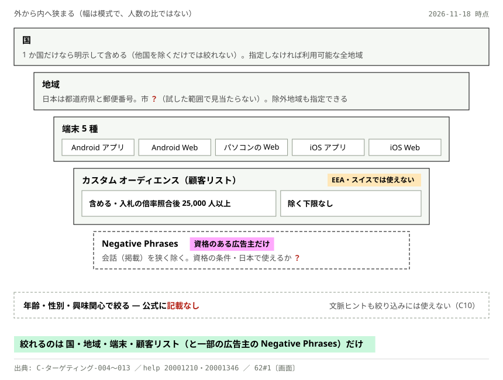

[ ChatGPT / 23 ]
23ターゲティングと文脈ヒント
位置づけ: 「誰に・どこで・どんな会話で出るか」と「どう絞るか・外すか」を引くメモ。国・地域、端末、カスタム オーディエンス、文脈ヒント、Negative Phrases、利用者側のパーソナライズの設定、広告が出ない会話。Google の ../Google広告の基礎/23_オーディエンスとターゲティング.md（以下 G23）と、キーワードに頼らない Google の ../Google_AI最大化設定（AI Max）.md（以下 AI Max）に当たる
このメモについて
- 確認日: 2026-11-18（help.openai.com のキャンペーン作成・文脈ヒントの書き方（英語版・日本語版）・広告グループの作成・カスタム オーディエンス・基本・利用者向けの広告の説明・トラブルシューティング・商品フィードのキャンペーンの各ページを、Claude のアプリ内のブラウザ（自分専用のタブ）で本文まで読んだ。developers.openai.com/ads/ll…
- 位置づけ: 「誰に・どこで・どんな会話で出るか」と「どう絞るか・外すか」を引くメモ。国・地域、端末、カスタム オーディエンス、文脈ヒント、Negative Phrases、利用者側のパーソナライズの設定、広告が出ない会話。Google の
../Google広告の基礎/23_オーディエンスとターゲティング.md（以下 G23）と、キーワードに頼らない Google の `../Google_… - 使い方: 確認日から 2 週間を過ぎたら出典を取り直す。地域の細かさは国ごとに違い、日本の中の指定は運用者の画面で見た 1 件だけ（62#1）
- 凡例: ✓ 公式で確認 ／ △ 資料によって食い違う ／ ? 確認できず
- 主張の出どころの印: 公式〔画面〕（62 の記録）〔報道〕〔第三者〕〔推測〕
地図
本文
0.先に結論

広告主が絞れるのは国・地域（日本は都道府県と郵便番号）・端末 5 種・カスタム オーディエンス（含めるは照合後 25,000 人以上、除くは下限なし、EEA・スイスは不可）で、会話を除く Negative Phrases は資格のある一部の広告主だけ。年齢・性別・興味関心の指定は公式に記載が無いので人で絞る設計はせず、日本だけに出すなら日本を明示して含め、既存顧客の除外は最初から入れる。
出典: C-ターゲティング-004・C-ターゲティング-005・C-ターゲティング-006 ほか 16 件 · 2026-11-18 時点
- 01
広告を出す引き金は「会話の文脈と意図」。 キーワードもマッチタイプも無い。広告システム（LLM のオーケストレーター）が会話を要約して検索用の問いを作り、広告の候補を探し、資格・関連性・品質で絞り、オークションに回す ✓ S-18（日本語版の本文）、S-31
- 02
広告主が絞れるのは 4 つだけ。 国・地域、端末（5 種）、カスタム オーディエンス（含める・除く）、そして資格のある広告主だけの Negative Phrases。年齢・性別・興味関心のターゲティングは公式に無い ✓ S-34、S-31 ／ ?
- 03
日本は都道府県（地域）と郵便番号で指定できる。市の単位は試した範囲で出ない 〔画面〕62#1。ヘルプは「州・地域・市・マーケット・郵便番号を、国によって」と書く ✓ S-34
- 04
新しいセルフサーブのアカウントは、最初は自国だけに出せることがある。他国を選んでも上書きされず、条件の金額はサポートも教えない ✓ S-34
- 05
カスタム オーディエンスは、含める・入札の倍率に照合後 25,000 人以上（推奨 10 万人以上）。除外は下限なし。 EEA・スイスでは使わない ✓ h20001346、S-01
- 06
文脈ヒントはキーワードではない。 広告グループ単位で最大 2,000。「何を・誰に・いつ」を 1 つの考えで自然な文に。配信の指示（地域・スケジュール・除外）は効かない。「特定の顧客層に届けたい」だけでは関連性にならない ✓ S-44（本文）、S-01
- 07
出したくない会話を外す手段は、ほぼ OpenAI 側の安全の仕組みだけ。 広告主側は Negative Phrases（資格のある一部の広告主）しかない ✓ S-31
- 08
利用者が「広告のパーソナライズ」をオフにしても、今の会話の文脈では広告が出る。 オンなら過去のチャット・記憶・広告への反応も使う ✓ S-30（本文）
1.Google との対比（G23・AI Max と）

Google のキーワードは検索語句と照合して出す指定だが、ChatGPT の文脈ヒントは広告グループごとに足す関連性の材料で、完全一致のキーワードではなく、特定の会話での配信を保証しない。キーワードの一覧を貼らずに「何を・誰に・いつ」を 1 つの考えの自然な文で書き、地域や除外はヒントではなくターゲティングの設定で指定する。
出典: C-ターゲティング-001・C-ターゲティング-002・C-ターゲティング-003 ほか 6 件 · 2026-11-18 時点
- 会話の文脈と意図
- 文脈ヒント
- Negative Phrases
- 所在地か関心かの選択は ? 記載なし
- 絞り込みには利用 90 日以上・累計 5 万米ドル超
- 含める・倍率は照合後 25,000 人以上
表で見る（11 行。上の図のもとの表）
| 観点 | Google 広告（G23・AI Max） | ChatGPT の広告 | 運用の判断への効き方 |
|---|---|---|---|
| 引き金 | 検索語句とキーワード（マッチタイプ）。AI Max の「検索語句のマッチング」は LP・アセットからキーワードの外に広げる | 会話の文脈と意図。キーワードは無い。LP・タイトル・本文・文脈ヒント・ターゲティングの設定・（パーソナライズがオンなら）利用者の ChatGPT の体験の一部 ✓ S-30、S-31 | 「AI Max のキーワードを全部外した形」に近い〔推測〕。設計の主役は LP と文脈ヒント |
| 広告主が書く「手がかり」 | キーワード、AI Max のブランドの登録・URL の登録・テキスト ガイドライン | 文脈ヒント（広告グループに最大 2,000）。完全一致のキーワードではない ✓ S-01 | キーワードの一覧を貼らない。場面の説明文を書く（§7） |
| 除外 | 除外キーワード、AI Max のブランドの除外・URL の除外、テキスト ガイドラインの除外語句（25 個） | Negative Phrases（資格のある一部の広告主だけ）✓ S-31。ヒントで除外はできない ✓ S-44 | 「この話題では出さない」を広告主が設計できない前提で、出せない業種・LP を選ぶ |
| 何で出たかの報告 | 検索語句レポート | 会話・話題の列は無い 〔画面〕62#7 | 改善は広告グループの分け方とヒントの書き分けで比べる |
| 地域 | 「所在地やインタレスト」（既定）と「所在地」。除外は所在地基準だけ。判定は IP・端末の位置など | 国・地域・マーケット・市・郵便番号（国による）。所在地か関心かの選択は ? 記載なし。日本は都道府県と郵便番号 〔画面〕 | 日本の市単位は郵便番号を並べるしか今は見当たらない〔推測〕 |
| 端末 | パソコン・モバイル・タブレット・テレビ | Android アプリ・Android Web・パソコンの Web・iOS アプリ・iOS Web の 5 つ ✓ S-34 | アプリと Web で分けられる。タブレットの区別は ? |
| 顧客リスト | カスタマー マッチ。最小 100 人。絞り込みには利用 90 日以上・累計 5 万米ドル超が要る。除外・モニタリングは誰でも | カスタム オーディエンス。含める・倍率は照合後 25,000 人以上。除外は下限なし。利用実績の条件は ? 記載なし ✓ h20001346 | 小さなリストは除外にだけ使う |
| 年齢・性別・興味 | ユーザー属性、アフィニティ、購買意向 | ? 公式に記載なし | 人で絞る媒体ではない |
| 自動で広がる仕組み | 最適化されたターゲティング（ディスプレイ・DG・動画で既定オン）、AI Max | 指定の外に広げる仕組みの記載は無い。ただし地域を指定しなければ利用可能な全地域、端末を指定しなければ全端末 ✓ S-01 | 「指定しない＝全部」。日本だけに出すなら日本を明示（§3-3） |
| 利用者側の設定 | 広告のパーソナライズの設定（Google アカウント） | 広告のパーソナライズ、過去のチャットと記憶、広告データの削除、広告なしの選択（無料版）✓ S-30 | 届く母数とターゲティングの効き方が利用者の設定で変わる（§9） |
| 出ない場面 | センシティブな業種・話題の制限 | 健康・心の健康・政治など敏感な会話、一時チャット、18 歳未満、有料プラン ✓ S-30、S-19 | 配信面の量は会話の種類に強く左右される |
2.広告がどう選ばれるか（引き金の仕組み）
- 見込みの関連性と成果
- 関連性と広告主の入札額
- 状態を保つ「広告セッション」
- 商業的な意図を表す問いを 1 つ以上
- ターゲティング（配信を許した地域など）
- センシティブでない
2-1.公式の説明 ✓公式S-30・S-31（本文）
- 「広告システムは、見込みの関連性と成果で広告を選んで配信する。今の会話の文脈と意図、広告の LP・タイトル・コピー、広告主が出す文脈ヒントとターゲティングの選択、（広告のパーソナライズが有効なら）利用者の ChatGPT の体験全体からの一部のシグナル、など複数のシグナルを考える」
- 「候補が複数あるとき、関連性と広告主の入札額などを組み合わせて、どれを先に出すかを決める」（S-30）
2-2.技術ブログの説明 ✓公式S-18（日本語版の本文、2026-10-21）

公式の技術ブログでは、会話を広告セッションとして追い、LLM が商業的な意図の問いを作ってから、候補の検索・除外・評価・オークション・最終チェックの順に 1 つへ絞る。広告主の設定が直接効くのは除外（地域・予算・ポリシー）とオークション（入札額）の段で、最初の一言ではなく会話の流れで選ばれるので、LP と文脈ヒントは会話の意図に合わせて書く〔推測〕。
出典: 23§2-1・23§2-2・23§2-3 ほか 5 件 · 2026-11-18 時点
表で見る（7 行。上の図のもとの表）
| 段階 | 中身 |
|---|---|
| 会話の記憶 | 1 つのメッセージを独立の依頼として扱わず、状態を保つ「広告セッション」で会話の進み方を追う。複数の会話にまたがることもある |
| 問いの準備 | オーケストレーター（事後学習済みの LLM）が会話を短い文に要約し、商業的な意図を表す問いを 1 つ以上作る。例: ヨセミテ旅行の会話のあとにブランドの新商品を聞くと、「ハイキング旅行に向く靴」「旅行に向く〔ブランド〕の新商品」の 2 つの問いにする |
| 候補の検索 | 意味の埋め込みで近い広告を幅広く集める（近似最近傍検索）。商品フィード広告用の索引は商品レビューの良し悪しも考える |
| 資格のない候補の除外 | 有効か、ターゲティング（配信を許した地域など）、ポリシー、予算の残り、ペース配分、掲載先との適合（どんな会話に出せる広告か）、広告主ごとの重複の排除 |
| 関連性と品質の評価 | 意味の関連性、予測エンゲージメント（閲覧・クリック・成果の見込み）、過去の実績 |
| オークション | 参加資格（関連性と価値の最低基準）、ペース配分、入札額の計算、品質を加味した順位、価格設定、最終選定（02 §4） |
| 最終チェック | 会話の文脈で広告が不適切に感じられるときは出さない。回答に間に合わなければ出さない |
- 「商品やサービスへの言及を、すべて購入の希望と捉えてはいけない」「ユーザーが仮定の話をしていることを認識する」とオーケストレーターに求めている（S-18）
- パーソナライズを選んだ利用者では、過去の会話のセンシティブでない情報も考える（S-18）
2-3.運用の判断への効き方
- 関連性の材料は「LP・タイトル・本文・文脈ヒント」の 4 つ。会話の意図に合う LP を用意するのが最初の手〔推測〕
- 広告は「最初の一言」ではなく会話の流れで選ばれる。検索広告のような「この語が来たら出る」という設計は効かない〔推測〕
- 同じ広告主の広告は重複が排除される（S-18）。同じ会話に自社の広告を 2 本並べる設計はできない
3.国・地域
- 州・地域、市、マーケット、郵便番号
- | 「Tokyo」で「Tokyo, Japan（地域）」＝
- 「東京」「大阪」「Yokohama」では「100-8903, 東京地方検察庁, 13, Japan（郵便番号）」のような
- の候補
- おおまかな位置や言語などの基本の文脈
- 正確な位置は広告主に渡さない
3-1.指定できるもの ✓公式S-34（本文）、S-01、〔画面〕62#1
| 項目 | 中身 |
|---|---|
| 置き場所 | キャンペーン |
| 単位 | 国に加え、州・地域、市、マーケット、郵便番号を「使える国で」（日本語版ヘルプ 20001210 の語は「州や地域、市、市場エリア、郵便番号」。DMA の語は本文に無い。33§21-1#22）。国によって違う。キャンペーンの作成で地域を検索すると使えるものが出る（S-34）。API は国コード（ISO 3166-1 alpha-2）と、地域の検索で返る ID（国・地域・マーケット）（S-01） |
| 日本 | 「Tokyo」で「Tokyo, Japan（地域）」＝都道府県。「東京」「大阪」「Yokohama」では「100-8903, 東京地方検察庁, 13, Japan（郵便番号）」のような郵便番号の候補。市の候補は試した範囲で出なかった 〔画面〕62#1 |
| 数の上限 | 含める・除くの一覧に合わせて最大 2,500 ID（S-01） |
| 除外 | 除外地域の利用者には、対象地域に一致しても出ない 〔画面〕62#2、S-01 |
| 指定しないとき | 利用可能な全地域に出うる（S-01） |
| 商品フィードのキャンペーン | 新しいものは国単位だけ。既存の細かい指定は残るが、新しく足せない（S-34、h20001268） |
| 地域の一覧 | CSV（openai-geotargets.csv）が公開されている（S-01） |
- ? 地域の一覧の CSV は 2026-11-18 も取得できず（Cloudflare の確認画面）。日本の都道府県・郵便番号の全体は未確認
- ? 利用者の位置をどう判定するか（IP か、アカウントの設定か）、「いる人」か「関心のある人」かの選択は記載なし。利用者向けヘルプは、広告に使う情報として「おおまかな位置や言語などの基本の文脈」を挙げ、正確な位置は広告主に渡さないと書く（S-30）
3-2.指定のしかたの落とし穴 ✓公式S-34、h20001217（本文）
- 米国だけに出したいなら、米国を明示して含める。他の国を除くだけでは米国に絞れない（S-34）。〔推測〕日本でも同じく、日本だけなら日本を明示して含める
- 「すべての国を選んで一部を除く」設定は、除いていない対象国に配信されうる。設定を変えても過去の配信の国は変わらない（h20001217）
- API で地域・オーディエンスを更新すると、既存の指定が置き換わることがある。更新の前にキャンペーンを読み、残したい指定も全部送る（S-01）
3-3.新しいアカウントは自国だけ ✓公式S-34（本文）
- 新しいセルフサーブのアカウントの一部は、最初は自国（アカウントの国）にしか出せない。他の国を選んでもこの制限は上書きされない
- アカウントの履歴などのシグナルで信頼を積み、自国の外への配信などの機能が使えるようになることがある
- サポートは、必要な現地の広告費・支払いの額を教えない。あといくら要るかの計算も、いつ広がるかの保証もしない
- 「配信できる対象の国が無い」と出たら、含める地域と除外の両方に、今のアカウントで出せる国が入っていない。有効なキャンペーンや承認済みの広告でも、国の制限は上書きされない。下書きの保存は配信できる証拠ではない
- 〔画面〕日本の法人のアカウントは国が日本で、作成後に変えられない（62#11）
3-4.Google との違い
- Google は「所在地やインタレスト」が既定で、地域に関心を示した人にも出る（G23 §5-1）。ChatGPT はその選択の記載が無い ?
- Google は市区町村や半径で指定できる。ChatGPT の日本は都道府県と郵便番号（画面）。半径は ? 記載なし
3-5.運用の判断への効き方
市で絞りたいときは郵便番号を並べる〔推測〕（62 §2）。上限は 2,500 ID
で計画する。訪日・越境の配信は、自国の外が使えるようになってから〔推測〕
（§7）。「〇〇市の住宅の水道修理」は事業の説明として書いてよいが、配信を絞るのは地域の設定
4.端末 ✓公式S-34（本文）、S-01
- レポートの面では今は
unknownに入る - 運用の判断への効き方
| 画面の名前 | API の値 | 中身 |
|---|---|---|
| Android アプリ | android_app | Android の ChatGPT アプリ |
| Android Web | android_web | Android のブラウザの ChatGPT |
| パソコンの Web（Desktop web） | desktop_web | パソコンのブラウザの ChatGPT |
| iOS アプリ | ios_app | iOS の ChatGPT アプリ |
| iOS Web | ios_web | iOS のブラウザの ChatGPT |
| （まとめ）Web | web | すべての Web（携帯のブラウザも含む。パソコンだけではない） |
- 2026-09-10 から Web を 3 つに分けて指定できる。既存の
webはそのまま全 Web（S-01） - 指定は任意。作成時に指定しなければ全端末（S-34、S-01）
- レポートで 5 つの端末に分けて見られる（S-34）
- ? タブレットの区別、ChatGPT Atlas（ブラウザ）の扱いは記載なし（00 §8 は「Atlas はテスト中は出ないとする抜粋が 1 件」。2026-11-24 にヘルプを検索しても扱いの記事は無かった、66§16）
- ✓ ChatGPT のデスクトップ アプリ（Windows・Mac）での活動は、レポートの面では今は
unknownに入る。指定できる 5 つの面には無い（D:Ads「Platform breakdown」、2026-11-24、66§5-2・§16）。成果は面で割れない（66§0） - 運用の判断への効き方: アプリのインストールを狙うなら、アプリの端末だけのキャンペーンを分ける〔推測〕。LP がスマホで使いにくいなら、まずパソコンの Web に絞って比べる〔推測〕。端末ごとの入札の倍率は無い（02 §6）ので、分けたいときはキャンペーンを分ける
5.カスタム オーディエンス
- に入る人だけに出す | 照合後
- （推奨
- 下限なし
- 除外が優先
- 除いた後に残る人数が 25,000 人以上
- E.164 形式（＋と国番号）
5-1.使い方の 3 つ ✓公式h20001346（本文、2026-10-20 ごろ更新）、S-01
| 使い方 | 置き場所 | 中身 | 人数の条件 |
|---|---|---|---|
| 含める | キャンペーン | 選んだオーディエンスのどれかに入る人だけに出す | 照合後 25,000 人以上（推奨 10 万人以上） |
| 除く | キャンペーン | 選んだオーディエンスの人には出さない | 下限なし（空のオーディエンスも可） |
| 入札の倍率 | 広告グループ | 当てはまる人への入札を 0.1〜10 倍に。誰に出すかは変えない | 照合後 25,000 人以上（推奨 10 万人以上） |
- 含めると除くを両方使うと、除外が優先し、除いた後に残る人数が 25,000 人以上でなければならない
- 同じオーディエンスを 1 つのキャンペーンで含めて除くことはできない
- 25,000 人未満のオーディエンスは「準備完了（除外のみ）」と表示される
- 開発者文書: 25,000 人は「公開の計画用の目安」で、プライバシーの保護で境目は動くことがある。25,000 件を上げても照合が足りるとは限らない（S-01）
- 広告マネージャーは照合した個人を見せない。人を選ぶこともできない
5-2.作り方 ✓ h20001346、S-01
| 項目 | 中身 |
|---|---|
| 識別子 | メールアドレス、電話番号、SHA-256 でハッシュ化したメール・電話、Google の広告 ID（GAID）。CSV では種類を混ぜられる |
| ファイル | UTF-8 の CSV か TXT、500 MB（500,000,000 バイト）まで。CSV は見出しの行（email・phone_number・email_sha256・phone_number_sha256・gaid） |
| 人数 | 500 万人を超えられる（作成後に何回かに分けて足す） |
| 処理 | 通常 20〜30 分（大きさで変わる）。上げた行数と照合した人数は違う |
| 更新 | 追加・削除・置き換え。キャンペーンや広告グループを作り直さずに済む。API では 2〜64 個を合わせて新しいオーディエンスを作れる |
| 上げたファイル | 処理後に削除。ふつうは上げてから 24 時間以内 |
| メール | @ が 1 つ。大文字は小文字に、前後の空白は除く。途中の空白は不可 |
| 電話 | E.164 形式（＋と国番号）。国番号の無い番号は受け付けない |
| GAID | ダッシュを残し、ハッシュ化しない |
| 置き場所（画面） | ツール > オーディエンス > オーディエンスを作成 |
- 〔推測〕日本の電話番号は「+81」で始め、先頭の 0 を落とした形（090-1234-5678 → +819012345678）にしないと受け付けられない。E.164 の決まりからの読み
- ✓ 使えるのは、広告に使う権利のあるファーストパーティのデータだけ。データ仲介業者から買ったデータは不可。必要な権利・通知・同意・法的根拠と、Ad Tools Terms に合っているかを、プライバシー・法務の承認を得て確かめる（S-01）
- ✓ EEA とスイスを対象にするキャンペーンでは使わない（パーソナライズ広告がまだ無いため）（h20001346、S-01、S-34）
- ✓ 照合の人数を守る仕組み: 含めるオーディエンスから人を減らす・除外のオーディエンスに人を足すと、使っているキャンペーンの残りの人数が足りなくなる場合、API は変更を拒むことがある（S-01）
- ? iOS の広告 ID（IDFA）は識別子に無い。〔推測〕iOS アプリの利用者の照合はメール・電話に頼る
5-3.Google との違い
- Google のカスタマー マッチは最小 100 人だが、絞り込みに使うには利用 90 日以上・累計 5 万米ドル超が要る（G23 §3）。ChatGPT は利用実績の条件の記載が無く、代わりに照合後 25,000 人の壁がある
- Google のスマート自動入札は、アカウント内の全カスタマー マッチを自動で取り込んで学ぶ（G23 §3-5）。ChatGPT で、指定していないオーディエンスを自動で使うかは ? 記載なし
- どちらも除外は小さいリストでも使える
5-4.運用の判断への効き方
- 既存顧客の除外は最初から入れる（下限なし）。新規獲得のキャンペーンで、購入済み・会員を外す
- 含める（リマーケティング的な使い方）は、照合後 25,000 人（推奨 10 万人）に届く顧客リストがある会社だけ。日本の中小の顧客リストでは届かないことが多い〔推測〕
- 倍率は「含める」と違い、他の人にも出したまま入札だけ上げる。既存顧客にも新規にも出したいときは倍率を使う（S-01 の説明）
- 顧客リストを上げる前に、社内のプライバシー・法務の承認を取る（公式がそう求める）
6.文脈ヒント
- コンテキストヒント
- 広告グループ単位
- 会話・話題・キーワード
- 完全一致のキーワードではなく、特定の会話での配信を保証しない
- 広告グループあたり 2,000
- 1 つの内容に絞った、分かりやすく自然なフレーズ
6-1.何か ✓公式S-44（英語版・日本語版の本文、2026-10-28 ごろ更新）、h20001211（本文）、S-01、S-31
- 日本語ヘルプの名前は「コンテキストヒント」、画面の列名は「コンテキストのヒント」（〔画面〕62#15）
- 「事業・商品・サービスについての補足情報で、ChatGPT の中でどんな場面に広告が合うかをシステムが理解するのに役立つ。広告グループ単位で足し、広告や LP だけでは伝わりにくい情報を共有する」（S-44）
- 基本のページは「広告主は広告グループで、商品・サービスが関係しうる会話・話題・キーワードを説明する文脈ヒントを出せる。マッチングの手引きになるが、完全一致のキーワードではなく、特定の会話での配信を保証しない」と書く（S-31）
- 「ヒントは関連性の判断の材料。利用者がヒントと同じ言葉を使わなくても、背景のニーズや状況から関連性を判断できる」（S-44）
- 上限: 広告グループあたり 2,000。埋める必要はない（S-01）
6-2.書き方 ✓ S-44（日本語版の語に合わせた）
- 自問: 「商品の中身、誰に役立つか、どんな場面で役立つかについて、ほかに伝えるべきことは？」
- 何を: 関連する製品の機能、サービス、料金、提供状況、対応エリア
- 誰に: 製品・サービスが合う顧客のニーズ、好み、事情
- いつ: 製品・サービスが役立つ状況や意思決定の場面
- 「脈絡のないキーワードを並べるのではなく、1 つの内容に絞った、分かりやすく自然なフレーズに。各ヒントで 3 つすべてを網羅しなくてよい」
- よいヒントの条件: 補足性（広告や LP で明らかなこと以上の情報）、具体性、関連性（商品と利用場面の実際のつながり）、正確性（機能・料金・キャンペーン・提供状況・対応エリアが変わったら更新）
- LP に書いてある情報でも、顧客のニーズと結びつければ役立つ（例: 「暖かい日のトレーニングに向く通気性のよいランニングシューズ」）
- 別の実際の利用場面を書いてよい（例: 足を支える運動靴が長時間の立ち仕事の人にも合うなら）。ただし「特定の顧客層にアプローチしたいというだけで、その層に合うことにはならない」
| 公式の例（S-44） | ヒント |
|---|---|
| ランニングシューズ | 初めての 5 km レースに向けて練習する初心者のための、日々のランニングに使えるクッション性のあるシューズ |
| 地域の水道修理 | 〔市〕で営業時間外にも対応する住宅の水道修理。緊急修理の出張料は 89 ドル |
| 会計ソフト | オンラインと実店舗の売上の照合が必要な、成長中の小売業者向けの帳簿管理ソフト |
| 開発者文書の例（S-01） | あまり役立たない → より役立つ |
|---|---|
| 靴 | → 岩場向けの軽いトレイル ランニング シューズ |
| アウトドア | → 雨の日のハイキング向けの防水の靴 |
| カリフォルニアの顧客 | → 地域の指定でカリフォルニアを選び、ヒントには商品の使い方を書く |
6-3.できないこと ✓ S-44、S-01
- 「ヒントはターゲティングのルールでも配信の指示でもない。特定の会話・オーディエンス・状況での表示を保証せず、地域の制限・配信スケジュール・除外条件を適用できない」
- 例: 「シカゴで利用できる住宅の水道修理サービス」は事業の説明。「この広告をシカゴにいる人だけに表示する」は配信の指示（効かない）
- 広告グループで扱う商品を書くのは「対象の商品の範囲をはっきりさせる」もので、特定の人や会話を除外するものではない
- 地域・端末・オーディエンスの指定の代わりにならない（S-01）
6-4.置き場所と更新 ✓ S-01、S-42、h20001211
- 共通の商品・サービス・テーマ・顧客のニーズでヒントをまとめる。関連する場面は同じ広告グループでよい。訴求や LP を変える必要がある場面は広告グループを分ける（S-44、h20001211。例: 水道修理なら「緊急の修理」と「予防の点検」を分ける）
- API でヒントを更新すると一覧ごと置き換わる（1 つ足すときは今の一覧を読んで足して全部送る。空の配列で消える。欄を省けばそのまま）（S-01）
- 一括入稿のヒントも既存の一覧に足されず、置き換わる（JSON の配列で全部書く）（S-42）
- 広告グループの数: △ 「キャンペーンあたり 10,000 まで。足りなければ複数のキャンペーンに分ける」（h20001211、本文、2026-11-12 ごろ更新）と「アカウントあたり 5,000 まで」（S-42・h20001209）が食い違う。小さいほう（アカウント 5,000）で計画する〔推測〕
6-5.Google（キーワード・AI Max）との違い
- Google のキーワードは「この語で出す」の指定で、マッチタイプで広さを決める。ChatGPT のヒントは関連性の材料で、広さを決める仕組みは無い
- AI Max の検索語句のマッチングは「キーワード＋LP・アセット」から広げる。ChatGPT は最初からキーワードが無く、LP・広告文・ヒントから会話との関連を判断する。AI Max の「ブランドの登録」「URL の登録」に当たる指定は無い ?
- Google ではキーワードの数を増やすほど届く範囲が広がる。ChatGPT のヒントは「埋めなくてよい」と公式が書く（S-01）。数より具体性
6-6.運用の判断への効き方
Google のキーワード表をそのまま入れると「脈絡のないキーワードの羅列」になる（公式が避けるよう書く）
で、「誰が・どんなときに・何に困って・どう役立つか」を書く。料金・対応エリア・営業時間など、LP の奥にある条件も書く〔S-44 の例からの読み〕
ヒントの書き方だけを変える〔推測〕。会話の話題のレポートは無い（62#7）ので、数字（表示・CTR・成果）で比べるしかない
料金・キャンペーン・在庫が変わったらヒントも直す（公式の「正確性」）
7.Negative Phrases（資格のある広告主だけ）
exclusion_hints- 他の除外
- Google との違い
- 一部の広告主だけ
- 運用の判断への効き方
- 今は広告主の側で確実に外せない
- ✓公式S-31（本文、2026-11-15 ごろ更新）: 「OpenAI の方針は、安全で適切で、利用者の信頼とブランドの安全に沿うチャットの近くにだけ広告を置くこと。安全の仕組みは、敏感な利用者の文脈やブランドにとって安全でない場面に広告が出ないよう設計している」「資格のある広告主は、ブランド独自の方針に基づく狭い掲載の条件のために Negative Phrases を使える。すべての広告主が使えるとは限らない」
- ? 資格の条件、日本で使えるか、画面のどこにあるか（62 の確認では見当たらない）、何語・何個まで指定できるか、一致の仕方
- ✓ 開発者文書の Bulk API（限定プレビュー）の広告グループの欄に
exclusion_hintsがある。中身の説明は無く、Negative Phrases の API 名かどうかは ?（「これがあるから全員が API で除外できる」とは言えない）（S-01、2026-11-24、04§7-2） - ✓ 文脈ヒントには除外の働きが無い（S-44）
- 広告主が使える他の除外: 地域の除外、カスタム オーディエンスの除外、端末の指定（S-01、S-34）
- Google との違い: Google の除外キーワードは誰でも使え、AI Max のテキスト ガイドラインは除外語句を 25 個まで指定できる（AI Max §1）。ChatGPT の Negative Phrases は一部の広告主だけ
- 運用の判断への効き方: 「この話題では出したくない」という要望のある案件（競合比較の会話を避けたい、など）は、今は広告主の側で確実に外せないと説明する。必要なら営業窓口に資格を問い合わせる〔推測〕
8.出ない会話・出ない人
- 2026-11-20 に v1.7 に更新
- ブランドにとって不適切な文脈
- サイバー上の不正行為
- ギャンブル・アルコール・たばこ
- センシティブな出来事
- 機微な利用者の文脈
8-1.出ない人・場面 ✓公式S-30（本文、2026-11-03 ごろ更新）、S-31
| 条件 | 広告 |
|---|---|
| 無料版・Go | 出ることがある |
| Plus・Pro・Business・Enterprise・Edu | 出ない |
| 18 歳未満とされたアカウント（申告と、使える場合は年齢予測） | 出ない。年齢予測は申告の年齢、アカウントの古さ、使う時間帯、使い方の推移、よく話す話題などの組み合わせ |
| ログインしていない利用者 | 全年齢向けの広告だけ。成人向けの広告はログインした対象者だけ |
| 一時チャット | 出ない |
| 無料版の「広告なし」を選んだ人 | 出ない（1 日のメッセージ数が減り、画像生成やディープ リサーチなど一部の道具が使えない） |
| 敏感な話題の近く（個人の健康、心の健康、政治など） | 出ない |
8-2.広告ポリシーの「広告を出さない文脈」✓公式S-19（日本語版の本文。2026-11-20 に v1.7 に更新。下の一覧は v1.7 に合わせた。全区分と v1.6 からの差は 66§10-3〜§10-5）
（v1.7 の 19 区分）: 子どもの安全、安全対策の回避、サイバー上の不正行為、センシティブな社会的コンテンツ、詐欺・欺瞞、性的コンテンツ、生々しい暴力描写、ヘイト・ハラスメント、違法なコンテンツ、知的財産の侵害、誤情報、冒涜的な表現、政治的コンテンツ、プライバシー、ギャンブル・アルコール・たばこ、センシティブな出来事（災害・危機・武力紛争・テロ・多数の死傷）、自殺・自傷、テロリズム、武器。v1.6 にあった「ネットいじめ」「危険な行為」の名前は v1.7 の一覧に無い（言い換えか消えたかは ?、66§10-5）
（v1.7 の 3 つ）: 感情的依存、メンタルヘルスと個人の健康の会話（本人・家族・親しい友人）、個人の脆弱性（悲嘆・孤独・人間関係の苦悩・強要・住まいの不安定・深刻な健康状態・差し迫った法的な危機・深刻な経済的困窮など。v1.6 の「慎重さが求められる体験」から書き直された）
（v1.7 で書かれた）: 主題、それが議論の中心か、機微な個人の事情が明かされているかで見る。一時的な言及だけではすぐに対象外にならず、教育・フィクションの枠でも自動では対象にならない（66§10-2）
変更履歴: v1.1（2026-04）で、医療・法律・金融の「助言」の文脈は、既定で一律に広告を止める対象ではなくなった。機微な会話やその他の禁止の文脈は引き続き対象外
審査の 3 段目は「掲載」: 承認された広告が、掲載ポリシーに合う会話にだけ出るようにする
8-3.技術ブログの「出ない」✓公式S-18
- 会話は安全な掲載先と判定され、広告もポリシーに合っていても、その会話では広告が不適切に感じられるときはオーケストレーターが出さない
- 回答の準備ができても広告が間に合わなければ出さない。広告の読み込みのために回答を遅らせない
- 「広告を返さないことも想定どおりの正常な結果」。ログには「そのターンは掲載の対象外だった」「検索が依頼されなかった」「候補が無かった」などの理由が残る（広告主に見えるかは ?）
8-4.運用の判断への効き方
- 届く母数は「無料版と Go の成人、広告なしを選ばなかった人、敏感でない会話」。B2B の決裁者は会社の Business・Enterprise を使っていれば届かない〔推測〕（00 §8）
- 健康・お金・法律に関わる商材は、会話の側でも出る場面が限られるうえに、業種の側（米国外の金融・健康・法律は原則禁止、00 §7-2）でも制限がある。両方で見る
- 「医療・金融の相談の会話には一切出ない」という古い説明は、2026-04 の変更で当てはまらなくなった（ただし業種の制限は別）
9.パーソナライズの仕組み（利用者の設定で何が変わるか）
- 今のチャットで話していること
- おおまかな位置や言語などの基本の文脈
- 広告への反応
- 過去のチャットと記憶
- 他のチャット、広告の履歴、話題は使わない
- 渡らない
9-1.広告に使う情報 ✓公式S-30（本文）
| 利用者の設定 | 広告に使われるもの |
|---|---|
| どの設定でも | 今のチャットで話していること、おおまかな位置や言語などの基本の文脈 |
| 広告のパーソナライズがオン（2026-02 から） | 上に加えて、今のチャット（パーソナライズされたモデルの回答を含む）、広告への反応（非表示にした・反応した広告）、過去のチャットと記憶 |
| パーソナライズがオフ | 今のチャットの文脈で広告は出る。他のチャット、広告の履歴、話題は使わない |
| 「過去のチャットと記憶」をオフ | 広告は今のチャットに頼る。過去のチャットと記憶は使わない |
| 記憶がオン | 広告を選ぶときに記憶を保存・利用し、最近のチャットを参照することがある |
- 広告主には、チャット・チャットの履歴・記憶・氏名・メール・正確な位置・IP・敏感な情報（健康・心の健康・政治など）は渡らない。渡るのは表示・クリックなどの集計だけ（S-30）
- 広告を非表示・報告・閲覧・クリックしても、ChatGPT の記憶には入らない。「ChatGPT に聞く」で広告を共有した会話は、チャット履歴の参照がオンなら後の会話で参照されうる（S-30）
- 一時チャットは記憶を作らない・更新しない。一時チャットにパーソナライズの選択が出るなら、始める前に「パーソナライズしない」を選ぶ（S-30）
9-2.利用者が操作できること ✓ S-30
- 設定 > 広告の管理（Ad Controls）: 広告のパーソナライズのオン・オフ、過去のチャットと記憶のオン・オフ、見た・反応した広告と、広告に使われた話題の一覧（履歴と話題）、広告データの削除（チャットには影響しない。完全に消えるまで最大 30 日）
- 広告の「…」: 非表示、報告（非表示にして審査に回る）、この広告について（なぜ出たか）、ChatGPT に聞く
- 広告の管理は、広告がある・まもなく始まる地域の無料版・Go の利用者だけ
- EEA とスイスでは、パーソナライズ広告は当初は提供しない
9-3.Google との違い
- Google は広告のパーソナライズを Google アカウント単位で管理する。ChatGPT は記憶・過去のチャットという AI 固有の情報が広告に使われうるのが新しい点
- Google のリマーケティングは自社サイトの訪問者を使う。ChatGPT で広告主が使える「人」の情報は顧客リスト（カスタム オーディエンス）だけで、サイト訪問者のリストを作る仕組みは ? 記載なし
9-4.運用の判断への効き方
- 「今の会話だけで選ばれる」と説明すると誤り。パーソナライズがオンの利用者では過去のチャット・記憶も使われる（96 #12）
- 逆に、パーソナライズをオフにした利用者にも今の会話で出るので、文脈ヒントと LP の関連性はどの利用者にも効く〔推測〕
- ? カスタム オーディエンスの照合が、利用者のパーソナライズの設定に左右されるか（オフの人は照合から外れるのか）は記載なし。EEA・スイスで使えない理由が「パーソナライズ広告が無いため」であることから、〔推測〕パーソナライズがオフの人には含める・倍率が効かない可能性がある。照合の人数を見積もるときの不確かさとして扱う
10.よくある思い込みと実際
思い込みキーワードを入れて配信を決める
実際キーワードは無い。文脈ヒントは関連性の材料で、完全一致でも保証でもない
印と出典: ✓ S-31、S-44
思い込みヒントにキーワードを並べるほど広がる
実際公式は「脈絡のないキーワードの羅列」を避け、1 つの考えの自然な文を勧める。2,000 を埋める必要はない
印と出典: ✓ S-44、S-01
思い込みヒントに「東京の人だけ」と書けば絞れる
実際配信の指示は効かない。地域は地域の設定で
印と出典: ✓ S-44
思い込みヒントで出したくない話題を外せる
実際除外の働きは無い。Negative Phrases は資格のある一部の広告主だけ
印と出典: ✓ S-44、S-31
思い込み日本の中は国単位しか選べない
実際都道府県と郵便番号で選べる。市は試した範囲で出ない
印と出典: 〔画面〕62#1
思い込み他の国を除けば日本だけに出る
実際日本を明示して含める（米国の例でヘルプがそう書く）
印と出典: ✓ S-34〔日本への当てはめは推測〕
思い込み新しいアカウントでもすぐ海外に出せる
実際最初は自国だけのことがある。条件の金額は教えてもらえない
印と出典: ✓ S-34
思い込み顧客リストは小さくても使える
実際含める・倍率は照合後 25,000 人以上（推奨 10 万）。除外だけ下限なし
印と出典: ✓ h20001346
思い込み年齢・性別で絞れる
実際公式に記載なし
印と出典: ?
思い込み利用者がパーソナライズを切れば広告は出ない
実際今の会話の文脈では出る。消すには無料版の「広告なし」か有料プラン
印と出典: ✓ S-30
思い込み医療・お金の相談の会話には一切出ない
実際2026-04 から「助言」の会話は一律の除外ではない。敏感な会話は引き続き出ない
印と出典: ✓ S-19
思い込み指定しなければ日本だけに出る
実際地域を指定しなければ利用可能な全地域（新しいアカウントの自国の制限は別）
印と出典: ✓ S-01、S-34
11.判断の型
11-1.設計の順番〔推測。公式の §3〜6 から組み立てた〕
- 1国日本を明示して含める（新しいアカウントは自国だけ）
- 2地域店舗・対応エリアがあるなら都道府県か郵便番号。全国なら指定しない
- 3端末アプリの成果か、Web の成果かで分けるか決める
- 4除外既存顧客のリストを除外に入れる（下限なし）
- 5含める照合後 25,000 人（推奨 10 万）に届く顧客リストがあり、既存顧客向けの訴求をするときだけ
- 6広告グループ「場面×訴求×LP」で分ける。ヒントは 1 場面 1 文で、何を・誰に・いつ
- 7出したくない会話広告主の側で外せない前提で、業種と LP を選ぶ。必要なら Negative Phrases の資格を営業窓口に問い合わせ
11-2.配信が細いときの見る順（02 §8 と合わせて）
- 1国の制限（自国だけ）と「配信できる対象の国が無い」の表示
- 2地域・端末・含めるオーディエンス・除外の組み合わせで、残りが小さくなっていないか（大きなリストでも照合と除外で減る。S-01）
- 3含めるオーディエンスが 25,000 人を割っていないか
- 4文脈ヒントが「キーワードの羅列」や「配信の指示」になっていないか
- 5会話の側の制約（敏感な話題に近い商材ではないか）
12.細かいルール一覧
| 対象 | ルール | 値・できる／できない | 時点 | 印と出典 |
|---|---|---|---|---|
| 地域 | 置き場所 | キャンペーン | 2026-11-18 | ✓ S-01、S-34 |
| 地域 | 単位 | 国、州・地域、市、マーケット、郵便番号（国による） | 2026-11-12 ごろ更新 | ✓ S-34 |
| 地域（日本） | 使える単位 | 都道府県（地域）と郵便番号。市は試した範囲で出ない | 2026-11-18 | 〔画面〕62#1 |
| 地域 | ID の上限 | 含める・除くで最大 2,500 | 2026-11-18 | ✓ S-01 |
| 地域 | 指定しないとき | 利用可能な全地域 | 同上 | ✓ S-01 |
| 地域 | 1 か国だけに出す | その国を明示して含める（除外だけでは絞れない） | 2026-11-12 ごろ更新 | ✓ S-34 |
| 地域 | 商品フィードの新しいキャンペーン | 国単位だけ | 同上 | ✓ S-34、h20001268 |
| 地域 | API の更新 | 地域・オーディエンスの更新は既存を置き換えうる | 2026-11-18 | ✓ S-01 |
| アカウント | 新しいセルフサーブの配信国 | 最初は自国だけのことがある。上書き不可。条件の額は非公開 | 2026-11-12 ごろ更新 | ✓ S-34 |
| 端末 | 種類 | Android アプリ・Android Web・パソコンの Web・iOS アプリ・iOS Web | 2026-11-12 ごろ更新 | ✓ S-34、S-01 |
| 端末 | Web の分割 | 2026-09-10 から。web は全 Web | 2026-11-18 | ✓ S-01 |
| 端末 | 指定しないとき | 全端末 | 同上 | ✓ S-01 |
| カスタム オーディエンス | 含める・倍率の人数 | 照合後 25,000 人以上（推奨 10 万人以上） | 2026-10-20 ごろ更新 | ✓ h20001346、S-01 |
| カスタム オーディエンス | 除外の人数 | 下限なし（空も可） | 同上 | ✓ h20001346、S-01 |
| カスタム オーディエンス | 含める＋除く | 除外が優先。残りが 25,000 人以上 | 同上 | ✓ h20001346 |
| カスタム オーディエンス | 同じものを含めて除く | できない | 同上 | ✓ h20001346、S-01 |
| カスタム オーディエンス | 識別子 | メール・電話（そのままか SHA-256）・GAID | 同上 | ✓ h20001346 |
| カスタム オーディエンス | 電話の形式 | E.164（＋と国番号）。国番号なしは不可 | 同上 | ✓ h20001346 |
| カスタム オーディエンス | ファイル | UTF-8 の CSV・TXT、500 MB まで | 同上 | ✓ h20001346 |
| カスタム オーディエンス | 処理時間 | 通常 20〜30 分 | 同上 | ✓ h20001346 |
| カスタム オーディエンス | 上げたファイルの保持 | 処理後に削除（ふつう 24 時間以内） | 同上 | ✓ h20001346 |
| カスタム オーディエンス | EEA・スイス | 使わない（パーソナライズ広告が無いため） | 同上 | ✓ h20001346、S-01 |
| カスタム オーディエンス | 仲介業者のデータ | 不可 | 2026-11-18 | ✓ S-01 |
| カスタム オーディエンス | 合成 | 2〜64 個を合わせて新しいオーディエンス（API） | 同上 | ✓ S-01 |
| 倍率 | 範囲 | 0.1〜10 倍、最大の倍率が当たる | 2026-10-20 ごろ更新 | ✓ h20001346 |
| 文脈ヒント | 置き場所 | 広告グループ | 2026-10-28 ごろ更新 | ✓ S-44、S-01 |
| 文脈ヒント | 上限 | 広告グループあたり 2,000 | 2026-11-18 | ✓ S-01 |
| 文脈ヒント | 性質 | 完全一致のキーワードではない。配信を保証しない | 2026-11-15 ごろ更新 | ✓ S-31、S-44 |
| 文脈ヒント | 配信の指示（地域・スケジュール・除外） | 効かない | 2026-10-28 ごろ更新 | ✓ S-44 |
| 文脈ヒント | 更新（API・一括入稿） | 一覧ごと置き換え | 2026-11-18 | ✓ S-01、S-42 |
| 広告グループ | 数 | △ キャンペーンあたり 10,000（h20001211）／アカウントあたり 5,000（S-42・h20001209） | 2026-11-12 ごろ更新 | △ |
| Negative Phrases | 使える広告主 | 資格のある一部の広告主だけ。条件 ? | 2026-11-15 ごろ更新 | ✓ S-31 |
| 年齢・性別・興味 | 指定 | 記載なし | 2026-11-18 | ? |
| 利用者 | 出るプラン | 無料版・Go。Plus・Pro・Business・Enterprise・Edu には出ない | 2026-11-03 ごろ更新 | ✓ S-30 |
| 利用者 | 18 歳未満・一時チャット | 出ない | 同上 | ✓ S-30 |
| 利用者 | ログインしていない人 | 全年齢向けの広告だけ | 同上 | ✓ S-30 |
| 利用者 | パーソナライズをオフ | 今の会話の文脈では出る | 同上 | ✓ S-30 |
| 利用者 | 広告データの削除 | 最大 30 日で消える | 同上 | ✓ S-30 |
| 利用者 | EEA・スイスのパーソナライズ広告 | 当初は提供しない | 同上 | ✓ S-30 |
| 会話 | 出ない文脈 | ブランドに不適切な文脈 19 種と機微な利用者の文脈 3 つ（ポリシー v1.7。個人の脆弱性・センシティブな出来事などを名指し） | 2026-11-20 更新 | ✓ S-19 |
| 会話 | 医療・法律・金融の助言 | 2026-04 から一律の除外ではない | 同上 | ✓ S-19 |
13.取得できなかった・確認できなかった項目 ?（2026-11-18 時点）
- 地域の一覧（openai-geotargets.csv）の中身。developers.openai.com のリンクは ads.openai.com に転送され、Cloudflare の確認画面で取得できず（ダウンロードにあたるので画面での取得もしていない）
- 利用者の位置の判定の仕方、「いる人」と「関心のある人」の区別、半径の指定
- 日本の市の単位の指定（画面では出なかった。ヘルプは「国による」）
- Negative Phrases の資格の条件・日本での提供・指定の仕方
- 年齢・性別・興味関心のターゲティング
- サイト訪問者のリスト（リマーケティング）を作る仕組み
- カスタム オーディエンスの照合が、利用者のパーソナライズの設定に左右されるか
- 指定していないオーディエンスを自動入札が使うか
- タブレット、ChatGPT のデスクトップ アプリ、ChatGPT Atlas の端末の扱い
- 広告グループの数の上限（10,000／キャンペーンと 5,000／アカウントの食い違い）
- 広告が出なかった理由（「掲載の対象外のターン」など S-18 のログの理由）が広告主に見えるか
14.既存のファイルとの食い違い
- 00 §4 の表「会話の文脈」「文脈ヒント」の行: S-31 は「ヒントで会話・話題・キーワードを説明できる」と書く（キーワードを書いてよいが完全一致ではない）。00 の「キーワードではない」は合っているが、「キーワードを書くこと自体は禁じていない」の補足があるとよい
- 00 §4 の表「カスタム オーディエンス」: 推奨 10 万人以上（h20001346）、処理 20〜30 分、ファイルは 24 時間以内に削除、電話は E.164 が無い
- 00 §4: 「米国は州・DMA・郵便番号」→ 今の S-34 は国を問わず「州・地域、市、マーケット、郵便番号（国による）」と書き、DMA の語は無い（開発者文書の例は「market」）。94#21 の出典違いの指摘とも合わせて、表現の見直しが要る
- 96 #3: 「文脈ヒントは…地域やオーディエンスの指定の代わりにもならない」は合っている。S-44 の「特定の顧客層に届けたいだけでは関連性にならない」を足すとよい
- 新しい広告グループの上限（キャンペーンあたり 10,000、h20001211）と、rules.csv C-上限-004（アカウントあたり 5,000）の食い違い △
出典一覧（確認日はすべて 2026-11-18。「更新」は 11-18 に見た相対表示から逆算）
ヘルプ（help.openai.com、アプリ内のブラウザで本文を読んだ）
- S-34 Creating campaigns for ChatGPT Ads（20001210、更新 約 6 日前）https://help.openai.com/en/articles/20001210-creating-campaigns-for-chatgpt-ads
- S-44 Writing context hints for ChatGPT Ads（20001521、更新 約 21 日前）英語版 https://help.openai.com/en/articles/20001521-writing-context-hints-for-chatgpt-ads ／日本語版「ChatGPT 広告のコンテキストヒントの書き方」https://help.openai.com/ja-jp/articles/20001521-writing-context-hints-for-chatgpt-ads
- S-31 Ads in ChatGPT: The Basics（20001207、更新 約 3 日前）https://help.openai.com/en/articles/20001207-ads-in-chatgpt-the-basics
- S-30 Ads in ChatGPT（20001047、更新 約 15 日前）https://help.openai.com/en/articles/20001047-ads-in-chatgpt
- S-42 Bulk Upload Campaign Schema Checklist（20001218、更新 約 29 日前）https://help.openai.com/en/articles/20001218-bulk-upload-campaign-schema-checklist
- h20001211 Create Ad Groups for ChatGPT Ads（更新 約 6 日前）https://help.openai.com/en/articles/20001211-create-ad-groups-for-chatgpt-ads（95 に未登録）
- h20001346 Set up Custom Audiences for your Campaign（更新 約 29 日前）https://help.openai.com/en/articles/20001346-set-up-custom-audiences-for-your-campaign（95 に未登録）
- h20001217 Troubleshooting Common Issues（更新 約 6 日前）https://help.openai.com/en/articles/20001217-troubleshooting-common-issues（95 に未登録）
- h20001268 Create Campaigns from Product Feeds（更新 約 7 日前）https://help.openai.com/en/articles/20001268-create-campaigns-from-product-feeds（95 に未登録）
- h20001209 Launch Campaigns（更新 約 28 日前）https://help.openai.com/en/articles/20001209-launch-campaigns（95 に未登録）
開発者文書・ポリシー・ブログ
- S-01 Ads — full documentation https://developers.openai.com/ads/llms-full.txt（本文。Targeting、Location Targeting、Platform Targeting、Custom Audiences、Context Hints、Troubleshooting、Changelog）
- S-04 OpenAI Ads locations（openai-geotargets.csv）https://developers.openai.com/ads/openai-geotargets.csv → ads.openai.com へ転送（取得できず）
- S-19 広告ポリシー（日本語版。初版は 2026-09-10 更新の v1.6 を本文で読んだ。）https://openai.com/ja-JP/policies/ad-policies/（本文）
- S-18 ユーザーの信頼と関連性を重視した ChatGPT の新しい広告基盤の構築（2026-10-21）https://openai.com/ja-JP/index/building-chatgpt-ad-stack/（日本語版の本文）
そのほか
- 〔画面〕
62_管理画面で確かめたこと.md（#1・#2・#7・#11・#15・#17） - Google 側:
../Google広告の基礎/23_オーディエンスとターゲティング.md§0・§3・§5、../Google_AI最大化設定（AI Max）.md§1
変更の記録
- 2026-11-18 初版（第 4 段の担当。help.openai.com の 10 ページ（文脈ヒントは英語版・日本語版）、広告ポリシーと S-18 の日本語版を本文で読み、開発者文書の一括版を照らした）
- 2026-11-24 深掘りの統合（担当 B）: 新しい章（04・33・66）と 94 の点検（2026-11-24）に合わせて直した — §3-1（地域の語は日本語版ヘルプの「州や地域、市、市場エリア、郵便番号」）、§4（Windows・Mac のアプリの活動はレポートでは
unknown、Atlas は変わらず ?）、§7（Bulk API のexclusion_hints、意味は ?）、§8-2・§12（広告を出さない文脈をポリシー v1.7 の 19 区分と機微な文脈 3 つ〔個人の脆弱性〕・判定の仕方に）、出典の S-19 を v1.7 に - 2026-11-24 深掘りの統合（担当 B）: 本文の人の名前を「運用者」などに置き換えた（冒頭の書き手の行と変更の記録はそのまま。）
[ 元 ] ChatGPT広告の基礎/23_ターゲティングと文脈ヒント.md